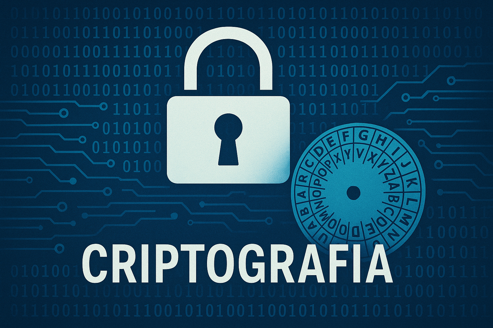

Tema 08 - Criptograf√≠a b√°sica1. Introducci√≥n2. Conceptos clave3. Tipos de cifrado3.1 Cifrado sim√©trico3.2 Cifrado asim√©trico3.3 C√≥digos hash4. Casos de uso reales5. Herramientas pr√°cticas5.1 BitLocker y EFS en Windows5.2 Cifrado de archivos en Linux5.4 Generar y comprobar hashes5.5 Otras herramientas √∫tiles6. üß™Pr√°ctica guiada: cifrado y verificaci√≥n7. Conclusi√≥n y consejos finales8. üß™Test de repaso
Tema 08 - Criptografía básica
1. Introducción

La criptografía no es solo cosa de espías y películas de Hollywood. Hoy en día, está en todas partes: cuando mandas un WhatsApp, cuando haces una compra online o cuando desbloqueas tu móvil con huella. Es la base que permite mantener nuestros datos seguros frente a miradas ajenas.
Imagina que quieres enviarle una nota secreta a un amigo. Podrías escribirla en código para que, si alguien la encuentra por el camino, no entienda nada. Eso es, en esencia, lo que hace la criptografía: transformar la información para que solo quien tenga la "clave" adecuada pueda entenderla.
Note
En este tema vamos a ver cómo funciona esa "magia", qué tipos de cifrado existen, y cómo podemos usarla en la vida real para proteger archivos, contraseñas o comunicaciones.
Y tranquilidad: no vamos a meternos con fórmulas matemáticas ni algoritmos imposibles. Solo lo básico y útil para que sepas cómo usarla... y cómo no usarla mal.
Un poco de historia: la m√°quina Enigma
Durante la Segunda Guerra Mundial, el ejército alemán utilizaba una máquina llamada Enigma para cifrar sus mensajes militares. Era una máquina con rotores que cambiaban constantemente las letras, haciendo que cada mensaje fuera casi imposible de descifrar sin conocer la configuración exacta del día.
Sin embargo, un grupo de matemáticos británicos liderados por Alan Turing logró romper el código de Enigma. Gracias a su trabajo, los Aliados pudieron anticiparse a muchos movimientos enemigos y se estima que eso acortó la guerra varios años.
Este fue uno de los momentos más importantes de la historia de la criptografía... y todo gracias a las matemáticas, la lógica y un poco de ingeniería.
2. Conceptos clave
Antes de meternos en tipos de cifrado y herramientas, vamos a repasar algunos conceptos b√°sicos que vas a ver continuamente en este tema (y en muchos manuales de seguridad).
Texto plano: Es la información original, sin cifrar. Tal cual se puede leer.
Texto cifrado: Es la versión transformada del texto plano. No se entiende a simple vista, a menos que se descifre con la clave correcta.
Cifrar: Es el proceso de transformar el texto plano en texto cifrado.
Descifrar: Es hacer el camino inverso: convertir el texto cifrado de vuelta en texto plano.
Clave: Es la "contraseña" o código secreto que se utiliza para cifrar y descifrar la información.
Algoritmo: Es el conjunto de reglas o pasos que definen cómo se hace el cifrado. Hay muchos tipos: AES, RSA, Blowfish...
Hash: No es cifrado como tal, pero se usa mucho en seguridad. Es una función que convierte cualquier texto en una especie de "huella digital" que no se puede descifrar. Sirve para comprobar integridad.
Tip
Si alguna vez ves algo como 5f4dcc3b5aa765d61d8327deb882cf99, eso probablemente es un hash (en este caso, un MD5). ¬øTe suena de algo?
Con estos términos ya podemos seguir el resto del tema sin perdernos en la jerga técnica.
3. Tipos de cifrado
La criptografía no es solo una. Hay varios tipos de cifrado según cómo se utilicen las claves o para qué sirvan. Aquí te explicamos los tres más importantes de forma sencilla:
3.1 Cifrado simétrico
Usa una √∫nica clave para cifrar y descifrar. Es como una caja fuerte con una sola llave: quien tenga la llave puede abrirla y cerrarla.
Es r√°pido y se usa mucho para cifrar grandes cantidades de datos.
El problema es cómo compartir la clave sin que nadie más la intercepte.
Note
Ejemplo: El algoritmo AES (Advanced Encryption Standard), usado para cifrar discos, archivos o conexiones seguras.
3.2 Cifrado asimétrico
Aquí se utilizan dos claves diferentes pero relacionadas: una pública y una privada.
La clave p√∫blica sirve para cifrar, y puede compartirla cualquiera.
La clave privada solo la tiene el destinatario, y sirve para descifrar.
Note
Lo genial de este sistema es que puedes enviar mensajes cifrados sin necesidad de conocer la clave privada del otro. Solo necesitas su clave p√∫blica.
Tip
Este sistema también permite hacer firmas digitales, para demostrar que un mensaje viene realmente de quien dice ser.
3.3 Códigos hash
Un hash no cifra ni descifra, sino que convierte cualquier texto en una especie de huella digital.
Siempre produce un resultado del mismo tamaño, aunque el texto original sea muy largo.
Es irreversible: no se puede obtener el texto original a partir del hash.
Se usa para comprobar si un archivo o contraseña ha sido modificado.
Note
Se usa por ejemplo, para no almacenar datos biométricos por seguridad. En lugar de guardar una imagen de tu huella digital, tu iris o tu cara, se guarda un hash. Ese valor es el que se compara y en caso de robo de datos, no se puede obtener la imagen real de tu huella.
Tip
Ejemplo: Si haces hash de un archivo y luego alguien lo modifica, el nuevo hash no coincidir√° con el original.
Warning
No uses hash como único método de protección. No sirve para ocultar datos, solo para verificar su integridad.
4. Casos de uso reales
Vale, ya sabemos qué es la criptografía y qué tipos existen. Pero… ¿para qué se usa realmente? ¿Dónde nos la encontramos en el día a día?
Pues en m√°s sitios de los que imaginas:
Navegación segura (HTTPS)
Cuando visitas una web con el candadito en la barra (https://), tu navegador está cifrando los datos para que nadie pueda espiar lo que haces.Contraseñas
Las webs no guardan tu contraseña en texto plano (o al menos, no deberían). Usan funciones hash para guardar solo una "huella" y verificarla cuando inicias sesión.Cifrado de discos y archivos
Si alguien roba tu ordenador, no podrá leer tus datos si están cifrados (por ejemplo, con BitLocker, EFS o LUKS).Mensajería instantánea
WhatsApp, Signal o Telegram usan cifrado de extremo a extremo: solo tú y la otra persona podéis leer los mensajes.Correos electrónicos seguros
Se pueden cifrar correos usando herramientas como PGP o S/MIME para que nadie m√°s los lea por el camino.Firmas digitales
Aunque no entraremos en detalle, la criptografía permite firmar documentos digitalmente para demostrar su autenticidad.Verificación de archivos descargados
Muchas webs ofrecen el hash de un archivo (MD5, SHA256…) para que compruebes que no ha sido manipulado antes de instalarlo.
Tip
Si alguna vez descargaste algo y te apareció un código largo como a2f5...c9d3, eso es un hash para que puedas verificar la integridad del archivo.
Por ejemplo, si insertas una librería como Bootstrap desde una CDN, es habitual ver algo así en el <link>:
<link href="..." integrity="sha384-...">
Ese atributo integrity contiene un hash. El navegador lo usa para comprobar que el archivo no ha sido modificado desde la fuente original. Si algo no cuadra... ¬°no se carga!
Como ves, la criptografía no es algo teórico: está protegiendo tus datos ahora mismo, mientras lees esto.
5. Herramientas pr√°cticas
Una cosa es entender la teoría... y otra muy distinta usarla. Aquí van algunas herramientas reales que puedes utilizar para aplicar la criptografía en tu día a día.
5.1 BitLocker y EFS en Windows
Estas dos herramientas ya las vimos en el Tema 3:
BitLocker permite cifrar discos enteros. Ideal si quieres proteger todo el contenido de tu equipo.
EFS (Encrypting File System) te permite cifrar archivos o carpetas sueltas desde las propiedades del archivo.
Note
Si no recuerdas cómo se usaban, puedes volver al apartado de cifrado del Tema 3.
5.2 Cifrado de archivos en Linux
En Linux también tenemos varias formas de cifrar archivos o sistemas completos:
GPG (GNU Privacy Guard)
Una herramienta muy potente para cifrar archivos, mensajes o incluso firmarlos digitalmente. Se basa en cifrado asimétrico, aunque en el ejemplo usamos cifrado simétrico.1gpg -c archivo.txt # Pide una contraseña y te genera un archivo cifrado llamado archivo.txt.gpg2gpg archivo.txt.gpg # Pide la contraseña para descifrarlo y genera un archivo llamado archivo.txtNote
¿Por qué GPG no me pide la contraseña al descifrar?Si al usar
gpg archivo.gpgno te pide la contraseña, no te asustes. GPG utiliza un componente llamadogpg-agentque guarda la contraseña temporalmente en memoria para no pedirla cada vez.Si quieres forzar que te la vuelva a pedir, ejecuta
gpgconf --kill gpg-agentpara vaciar la caché del agente.Tip
ü§ì ¬øY si quiero investigar m√°s...?
En este tema hemos usado GPG con cifrado simétrico, que es más simple y directo.
Pero GPG también permite trabajar con cifrado asimétrico (clave pública y privada), ideal para intercambiar mensajes de forma segura entre personas.
Si te interesa, puedes buscar información sobre cómo generar pares de claves congpg --gen-keyy cómo cifrar con--recipient. ¡Pero es un tema más avanzado!Cifrado con zip
Puedes comprimir y cifrar un archivo con contraseña fácilmente:xxxxxxxxxx21zip -e destino.zip origen.txt # Crea un destino.zip con origen.txt con una contraseña. -e de Encrypt.2unzip archivo.zip # Descomprime el contenido de destino.zip. Si tiene contraseña, la pide.Important
El contenido de los archivos estar√° cifrado, pero el contenido del archivozipsi es visible. Se ver√°n los nombres de los archivos que est√°n en el interior del zip.LUKS (Linux Unified Key Setup)
Sirve para cifrar discos o particiones completas, ideal para pendrives o sistemas port√°tiles. Su uso es m√°s avanzado y requiere preparar el dispositivo.Note
üîê LUKS es al mundo Linux lo que BitLocker es a Windows.
Ambos permiten cifrar discos o particiones completas para proteger los datos si el dispositivo se pierde o es robado.
Una vez desbloqueado al arrancar, el uso del sistema es completamente normal.
5.4 Generar y comprobar hashes
Además de cifrar archivos, en Linux también puedes calcular una "huella digital" de cualquier archivo usando funciones hash como SHA256. Esto es muy útil para comprobar si un archivo ha sido modificado.
xxxxxxxxxx31sha256sum archivo.txt # Muestra el hash por consola2sha256sum archivo.txt > archivo.hash # Dirige la salida a un archivo de texto3sha256sum -c archivo.hash # Verifica la integridad del hashTip
Puedes usar también md5sum o sha1sum, pero SHA256 es más seguro y recomendado actualmente.
Caution
Si alguien modifica aunque sea un solo car√°cter del archivo, el hash ser√° completamente distinto.
Note
Este método se usa a menudo en páginas web de descargas para que puedas comprobar si el archivo se descargó correctamente y no ha sido alterado.

También se pueden crear múltiples hashes en un único archivo:
xxxxxxxxxx21sha256sum *.txt lista.hash # Crea una lista de todos los hash de los archivos *.txt2sha256sum -c lista.hash # Comprueba todos los hash de todos los archivosNote
üîçEn el ejemplo puedes ver que uno de los archivos no coincide. Eso ocurre porque hemos modificado a prop√≥sito el archivo extraterrestres en soria.txt despu√©s de generar su hash.
5.5 Otras herramientas √∫tiles
VeraCrypt
Gratuita y multiplataforma. Permite crear vol√∫menes cifrados en un archivo o cifrar discos enteros. Es como una caja fuerte virtual que se monta como una unidad m√°s.Extensiones y plugins
Hay complementos para navegadores y gestores de correo (como Thunderbird) que permiten cifrar y firmar correos fácilmente.Utilidades online (con precaución)
Existen webs que permiten generar hashes, cifrar textos o archivos, etc. Útiles para aprender o hacer pruebas, pero nunca las uses con información sensible.
Warning
Si subes datos reales a una herramienta online para cifrar o hacer hash, pueden quedar expuestos. Usa solo webs de confianza y con precaución
6. üß™Pr√°ctica guiada: cifrado y verificaci√≥n
En esta práctica vamos a hacer una simulación sencilla de cómo proteger un archivo antes de enviarlo por Internet. Usaremos herramientas reales y comandos que ya hemos visto. Todo en nuestra máquina virtual Linux.
Objetivo: Crear un archivo, cifrarlo con contraseña, verificar su integridad con un hash y luego descifrarlo.
Preparativos: Crea una carpeta llamada cripto en donde quieras y abre una terminal en su ubicación.
üü™Paso 1: Crear el archivo original
xxxxxxxxxx11echo "Este archivo contiene información secreta" > secreto.txtCreamos un archivo de texto llamado secreto.txt con ese contenido.
üü™Paso 2: Cifrar el archivo con contrase√±a (GPG)
xxxxxxxxxx11gpg -c secreto.txt # Crea un nuevo archivo cifrado llamado secreto.txt.gpgNos pedirá una contraseña para cifrar el contenido. Apúntala.
Se generar√° un archivo
secreto.txt.gpg.Borramos el original y nos quedamos solo con el cifrado:
xxxxxxxxxx11rm secreto.txt # Borra el archivo original sin cifrar
üü™Paso 3: Calcular el hash del archivo cifrado
xxxxxxxxxx11sha256sum secreto.txt.gpg > hash.txtCon esto estamos creando un nuevo archivo llamado hash.txt que contiene el hash del archivo secreto.txt.gpg.
üü™Paso 4: Simular un env√≠o
Imagina que envías secreto.txt.gpg y hash.txt por separado a otra persona. Este paso es fácil.
üü™Paso 5: Comprobar la integridad
Esa persona imaginaria, cuando reciba el archivo, puede volver a calcular el hash y compararlo con el original, para asegurarse que no nadie la ha modificado por el camino:
xxxxxxxxxx11sha256sum -c hash.txtSi el archivo no ha sido modificado, ver√°s algo como:
xxxxxxxxxx11secreto.txt.gpg: La suma coincide
üü™Paso 6: Descifrar el archivo
Ya que sabemos que el archivo no ha sido modificado desde que lo creamos, procedemos a descifrarlo para ver su contenido:
xxxxxxxxxx11gpg secreto.txt.gpgNos crear√° un archivo llamado secreto.txt descifrado el cual ya podremos ver su contenido sin problemas. Si quieres puedes borrar el archivo cifrado.
7. Conclusión y consejos finales
La criptografía no es solo cosa de películas o expertos en ciberseguridad. Está en nuestro día a día: cuando mandas un mensaje, compras online o simplemente desbloqueas tu móvil.
Ya has visto cómo cifrar y descifrar archivos, generar hashes y comprobar la integridad de los datos. Todo eso forma parte de proteger la información... pero la herramienta más importante eres tú.
Aquí van algunos consejos finales:
No uses contraseñas débiles para cifrar. Un buen cifrado con una contraseña como
1234no sirve de nada.Guarda tus claves en un lugar seguro. Si pierdes la contraseña, no siempre hay "botón de recuperar".
Verifica los archivos descargados cuando trabajes con software o datos importantes. Un simple
sha256sumpuede evitarte muchos sustos.No confíes en herramientas online para cifrar información sensible. Están bien para probar... pero no para proteger datos reales.
Practica en entornos seguros, y si tienes dudas, ¬°vuelve a este tema y repasa!
8. üß™Test de repaso
Pregunta 1 – Cifrado simétrico
¿Cuál es la principal característica del cifrado simétrico?
a) Utiliza dos claves distintas
b) Utiliza una clave p√∫blica y una privada
c) No necesita clave para funcionar
d) Utiliza la misma clave para cifrar y descifrar
Pregunta 2 – Hash
¿Qué representa un hash en el contexto de la criptografía?
a) Una contraseña temporal
b) Un algoritmo de cifrado reversible
c) Una huella digital del archivo
d) Una clave privada
Pregunta 3 – GPG
¿Cuál de los siguientes comandos sirve para cifrar un archivo con contraseña en Linux?
a) openssl archivo.txt
b) zip archivo.txt
c) sha256sum archivo.txt
d) gpg -c archivo.txt
Pregunta 4 – Verificación
¿Qué hace el comando sha256sum -c archivo.hash?
a) Verifica la integridad del archivo comparando el hash
b) Calcula el tamaño del archivo
c) Comprime el archivo y lo cifra
d) Cifra el archivo usando SHA256
Pregunta 5 – Cifrado de volúmenes
¿Qué herramienta se usa en Linux para cifrar volúmenes o dispositivos de almacenamiento?
a) zip
b) LUKS
c) GPG
d) EFS
Pregunta 6 – Cambios en archivos
¿Qué ocurre si modificas un solo carácter en un archivo y vuelves a calcular su hash?
a) El archivo se descifra
b) El hash cambia, pero muy poco
c) El hash no cambia
d) El hash cambia completamente
Pregunta 7 – Seguridad y contraseñas
¿Cuál de las siguientes opciones representa una buena práctica al usar cifrado con contraseña?
a) Usar contraseñas cortas para recordar fácilmente
b) Compartir la contraseña por correo sin cifrar
c) Utilizar una contraseña robusta y guardarla en un gestor de contraseñas
d) Guardar la contraseña en un archivo de texto plano junto al archivo cifrado
Pregunta 8 – Cifrado asimétrico
¿Cuál de las siguientes afirmaciones describe correctamente el cifrado asimétrico?
a) Utiliza una misma clave para cifrar y descifrar
b) Utiliza una clave p√∫blica para cifrar y una clave privada para descifrar
c) Solo sirve para verificar la integridad de los archivos
d) Permite cifrar archivos pero no mensajes
üôàMostrar soluciones
d) Utiliza la misma clave para cifrar y descifrar
c) Una huella digital del archivo
d)
gpg -c archivo.txta) Verifica la integridad del archivo comparando el hash
b) LUKS
d) El hash cambia completamente
c) Utilizar una contraseña robusta y guardarla en un gestor de contraseñas
b) Utiliza una clave p√∫blica para cifrar y una clave privada para descifrar